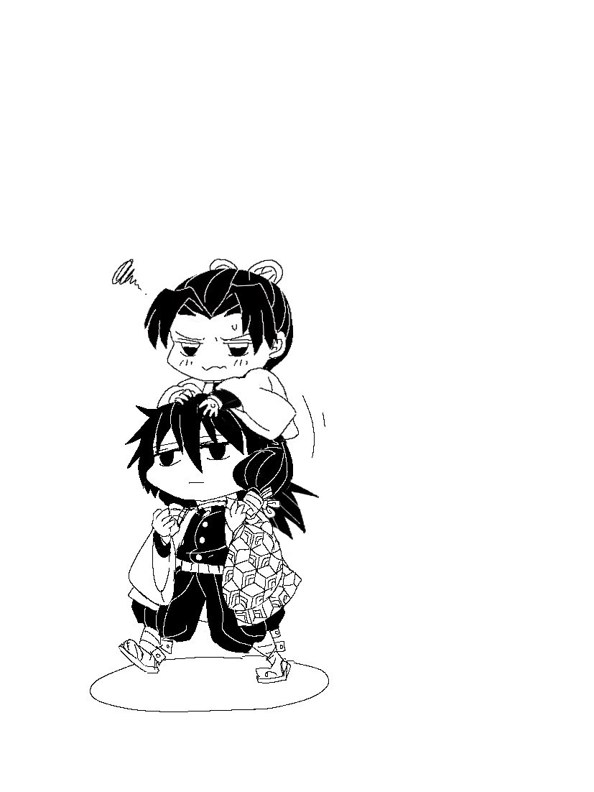

《敬請期待鮭大根》
『哎⋯⋯』
昏暗的山腰一角，有個嬌小的身影坐在樹下。
『痛⋯⋯』
忍小心翼翼的移動受傷的左腳，使其完全伸展平放在地。
以為那隻惡鬼已經被她的毒放倒了，以至於忍心裡有點放鬆。
結果這稍微的鬆懈加上原本應該料已麻痹而等著坐以待斃的傢伙突然又奮起一搏，忍的左腳被狠狠的掃過而失去平衡摔倒在地。
『唔⋯⋯！』
不過也僅有短短幾秒的迴光返照，惡鬼漸漸的癱軟在地，身體慢慢的崩解了。
（真是太大意了⋯⋯）
看來自己的配毒未臻成熟啊，她無奈心想。
外傷不太嚴重，倒是好像骨折了，忍摸著傷處判斷。
她馬上拿出隨身攜帶的鎮靜劑喝下，就近找了兩根木棍綁在小腿上固定。然後在樹下稍作休息等待鎮靜劑發揮止痛效果。
『本來想說可以蒐集一些藥材回去，現在也動彈不得了。』
忍從懷中取出一個小木盒，嘆了一大口氣。
（沙⋯沙⋯沙⋯⋯）
心裡正感嘆自己時運如此之差時，旁邊的樹叢突然傳來一陣不明的摩擦聲，彷彿是有什麼東西經過發出的聲響。
忍頓時提高警覺，緊握著刀柄。
（是什麼動物嗎？還是.......另一隻鬼？）
如果是後者那運氣也太差了，今天真不是個出任務的好日子。
（沙⋯沙⋯沙⋯⋯）
對方愈來愈接近了，忍已做好刀子隨時出鞘的準備。
⋯⋯⋯⋯⋯.
『是我。』
一個熟悉的語音，在人還沒現身時就先傳出。
『欸⋯⋯？』
忍聞言一呆，這個聲音⋯⋯
『難道說⋯⋯』
來者緩緩從樹叢走出來，身上著的是左半身黃綠相間的龜甲紋、右半身暗紅色的羽織——
（⋯⋯為啥？）
忍一陣暈眩，拼命忍住想翻白眼的衝動。
『你怎麼會在這，富岡先生？』
富岡仍是一號表情（就是沒有表情），淡淡的道：『主公大人傳令要我過來。』
『⋯⋯？』忍一臉疑惑，『為什麼要你過來？』
『說有得到情報，你的目標好像是被除名的下弦，以防萬一讓附近的我來支援。』富岡看著不遠處地上的一大攤血跡，『——但看來是不需要我出手了。』
『主公大人仍是這麼愛替人操心呢。』忍無奈的笑笑。
富岡將視線往下移到了忍的傷肢上。
『還能走嗎？』
『沒事，我休息一下。』忍揮揮手道。
『⋯⋯』
當富岡正若有所思時，忍抬起頭像是注意到什麼，臉色一變。
『啊⋯⋯！』她小小的驚呼一聲，『富岡先生！你可以過來一點嗎？』
『？』
雖然不知道忍想做什麼，他還是依言靠過去。
富岡一接近，忍立刻拽住他的衣袖，用沒受傷的右腳跳了起來，好似她根本沒事一樣。
『肩膀借我。』忍命令道，『彎下來一點。』
『蛤？』
富岡完全丈二金剛摸不著頭腦，忍又很急的樣子，不停拍著他的肩。
被催促著他也只好蹲低身子，忍隨即敏捷的跳上他的背，雙腳跨過他的肩膀坐上去。
『好了，你慢慢把我往上抬，動作別太大。』忍壓低音量道。
『？？？？』
富岡已經完全無法思考現在到底在幹嘛，也就愣愣的照著忍的話去做。
等到富岡完全把身子直立起來後，忍掏出了原本在懷中的木盒，打開拿出一支沾滿蜂蜜的竹籤，塗在樹幹上的一道細縫周圍，再將木盒掛在旁邊的枝椏上，用蜂蜜畫了一道痕跡牽引到木盒上唯一的小孔。
過了幾分鐘後，從樹縫中爬出了兩隻金色的蚜蟲，體型比一般的蚜蟲要大上幾倍，蟲兒一路吸吮著蜜，引誘進入了木盒。
忍見狀趕緊將孔洞蓋上，甚而重之的將木盒揣回懷中，如釋重負的鬆一口氣。
『這是在做什麼⋯⋯？』
見忍終於結束手邊的作業，富岡抬頭問道。
『捕蟲。』忍向他解釋，『這是很罕見的藥用蚜蟲，牠會分泌出一種汁液，對傷寒有非常好的療效。』
『你讓我抓就好了。』
還激動到不顧腳傷也要跳起來抓蟲，真拼命。
『那可不行。』忍嘖嘖，『你粗手大腳的，要是你把蟲捏死，我就虧大了。』
『⋯⋯』
確實光看她剛才捕蟲的手法，要抓這蟲倒真需要一點竅門。
『那麼富岡先生，能放我下⋯⋯啊！』
忍話還沒說完，富岡就已經邁開步伐走動了，讓她差點重心不穩失去平衡。
『富岡先生，我說，可以放我下去了。』
『⋯⋯』
『富岡先生，你有聽到嗎？』
『⋯⋯』
『哈囉？有人在家嗎？』
下頭的人腳下絲毫沒有放慢速度的意思。
『你不下山？』富岡問道。
『呃，要啊。』忍有點心虛，『我想說——休息一下再想辦法自己走。』
『用單腳跳著走？』
『⋯⋯』
忍無言以對，的確她這樣子根本沒辦法好好走路，嘴上想逞強而已。
見忍沒有回應，富岡也就不再繼續說話，安靜的『載』著她走。
只是走著走著，忍又開始覺得這氣氛沉默的有點兒尷尬了。
（想些什麼話題吧...可又該說什麼⋯⋯）
聊家人之類的嗎⋯？但鬼殺隊士大部分是因為鬼的關係家破人亡，雖也有不乏因給薪優渥而吸引入隊的人。
不過富岡怎麼看都不像是因為錢才進來的。
家人的話題很容易觸碰到內心的痛處，因為同病相憐所以能感同身受。
（那到底還有什麼能聊⋯⋯啊、只有這個了吧⋯⋯！）
忍用不太自然的聲音開口：『嗯......富、富岡先生喜歡吃什麼呢？』
面對這個似乎對世間任何事都不感興趣的男子，這大概是忍絞盡腦汁所能想到最無害的話題。
『⋯⋯鮭大根。』
『欸——是喔。』
『⋯⋯』
然後又回歸平靜。
（等等等等、照理說這邊不是應該會禮貌性的回問：那妳喜歡吃什麼嗎？為什麼就這樣安靜了呢？？
這個男的不知道什麼叫聊天嗎啊啊啊啊——！？）
忍心中不住連串的吐槽與吶喊。
（冷靜，忍，你要冷靜⋯⋯）
說起來，鮭大根是很樸素的料理，每個家庭的媽媽都會做也說不定，但越是簡單的菜要做得好吃反而更有一番講究在其中。
（會喜歡這樣的家常料理，也許是富岡先生家人的拿手菜之類的。）
『鮭大根啊⋯⋯不是很難的菜色，如果想吃我也會做——』忍順著富岡的話接下去，『啊、但可能比不上富岡先生的母親做的吧⋯⋯』
話甫一出口，忍就發覺不妙——
（剛剛還在想說別談到家人的⋯⋯）
因為這對象這氛圍實在太難聊，忍一時不小心就脫口而出——母親的話題。
但富岡並沒有太大的反應，相反的用很平靜的聲音開口：
『我沒什麼印象。』他停頓了一下，『⋯⋯我父母在我很小的時候就病逝了。』
不是鬼的緣故，忍稍稍的減輕了罪惡感。
『咦，所以你是⋯⋯』
『姐姐撫養我長大的。』富岡的表情出現了一絲絲柔和，『她叫做蔦子。』
『那蔦子小姐現在⋯⋯？』
其實不需要問忍大概也猜得到。
剛剛談及蔦子的名字時，富岡身上瞬間繃緊的神經，坐在他肩上的忍也可以很明顯的感受到。
『她是為了蔽護我才被鬼殺掉的。』
富岡像是從齒縫中擠出這句話一般。
而忍發現他全身在微微顫抖，整個人的神智彷彿墜入了不同的時空，拳頭緊握到指節發白、青筋暴突。
『富岡先生⋯⋯！』
富岡陷落在回憶的漩渦當中，無法自拔。
『富岡先生、富岡先生⋯⋯』
.........................
濃厚的血腥味。
言猶在耳的叮嚀。
臭不可聞的惡鬼。
不像人也不似野獸的嘶吼聲。
慘絕人寰的尖叫聲。
『義勇──』
蔦子姐姐的聲音，聽起來既模糊又遙遠。
『別出來⋯⋯千萬不可以出來⋯⋯！』
.........................
『富岡義勇！！』
耳邊衝入一聲高分貝呼喚，加上一個爆栗，富岡頓時一陣昏眩。
多虧這一拳，把他從回憶拉回現實世界了。
⋯⋯.雖然也很痛就是了。
『終於回神了。』忍放下拳頭，『你剛剛的表情超可怕的，殺氣騰騰。』
『⋯⋯抱歉。』
『幹嘛道歉，你又沒做錯什麼。』
忍輕輕把手掌放在富岡頭上。
『我跟你說，富岡先生，你沒有錯。』
『今天若是你跟蔦子小姐立場交換，你也會保護她。』
『她一心一意想保全最愛的弟弟，你順利活下來了，而且也健健康康的。』
『我覺得這樣對她應該是最大的安慰了⋯⋯所以，別再內疚了。』
『⋯⋯』
富岡沒有應答，不過忍感覺他的肩膀肌肉逐漸放鬆了。
遠方的雲朵漸漸明亮起來，不一會天空由深藍轉為橘藍漸層，朝陽露臉而出。
『天亮了⋯⋯』
陽光斜射，穿過樹冠，在兩人身上閃耀著。
『是啊。』
＊＊＊
兩人走到蝶屋敷時，太陽已經高掛多時了。
從前一晚在山上就滴食未進，忍本來是打算先在鎮上吃個早點。
畢竟富岡也載著她走不少路了。
『我不餓。』富岡淡淡的道，『先送你回去治療。』
『欸⋯⋯』
既然富岡如此善意，忍也就大方接受了。
（叩、叩。）
富岡敲了兩下大門，裏頭隨即傳來了腳步聲。
『來了──』稚嫩的女聲。
門緩緩打開，裡面探出一顆頭。
『忍大人！』是葵，『還有富岡大人！』
葵趕緊出來迎接，雖然見到這兩人的狀態她好像有一絲納悶。但注意力隨即放到忍綁著布條的左腳上。
『受傷了嗎？！』
『不要緊，只是骨折。』
葵緊張的查看忍的傷勢，此時從屋內又步出另一人的身影——
『啊啦，忍，你的腳⋯⋯』
是蝶屋敷的主人香奈惠。
『早安，富岡君。你特地送忍回來嗎？』
『啊⋯⋯』
發覺到自己居然比大家高很多以至於要低頭看著眾人的忍才發現自己還坐在富岡的肩膀上。
『快放我下來吧，富岡先生。』忍有點不好意思，心想難怪葵剛剛看她倆的眼神有些奇怪。
『先送你進屋。』富岡看著香奈惠，『可以吧？』
『嗯，當然可以。』香奈惠笑著說。
進屋後，富岡在玄關的地板輕輕把忍放下來。
香奈惠一邊攙扶著忍，一邊不住微笑看著她倆。
『好溫馨的畫面呢。』香奈惠笑咪咪道，『有沒有覺得好像小時候坐在爸爸肩膀上一樣啊，忍？』
『哎唷⋯⋯這是有原因的啦⋯⋯』忍苦笑。
她抬頭望著富岡，對方仍是不帶情緒的一張臉。
但好像漸漸習慣了，已沒有以前來的討厭。
『如果沒事的話，那我先吿辭了。』
富岡轉身，拉開門準備離去。
『富岡先生——』
只聽背後傳來一聲呼喚，讓富岡又回首望過去。
『今天謝謝你⋯下次有機會的話，』忍向他一笑，『我做鮭大根給你嚐嚐吧。』
富岡的眼中閃過了一絲清澈，像湖面的光波。
『嗯。』
